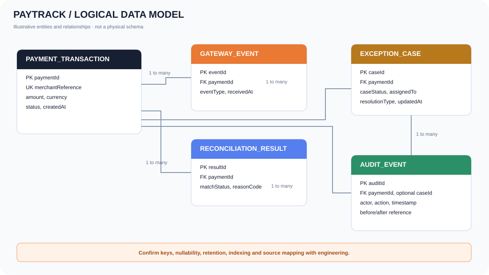

01
Business Requirements Document (BRD)
Problem, goals, scope, stakeholders, business requirements, rules, assumptions, risks and sign-off template.
Explore a connected set of analysis artifacts for a fictional payment reconciliation product—from business goals and functional requirements through UI wireframes, traceability and UAT planning.
Open the editable Markdown source or download structured CSV files.
Problem, goals, scope, stakeholders, business requirements, rules, assumptions, risks and sign-off template.
Functional behavior, permissions, validation, screen behaviors, logical data, error handling and NFRs.
Role/value statements with positive, negative and permission-related Given/When/Then acceptance criteria.
Requirement-to-test links, entry/exit criteria, sample scenarios, defect guide and UAT sign-off template.
Workshop agenda and summary, proposed decisions, action register, risks, assumptions, issues and dependencies.
Real, editable visuals in SVG or Mermaid source form.

Validate, match, handle an exception, resolve and record audit events.

UI, API, gateway, transaction store, reconciliation worker and controls.

Payment submission, gateway callback, reconciliation processing and status lookup.

Payments, gateway events, reconciliation results, exceptions and audit events.
Traceability, test cases and user story catalogues for spreadsheet review.
All sample test cases are marked Not Run.
Native editable layers for a reconciliation overview dashboard and exception detail screen; all numbers are illustrative.
Want to discuss a similar business problem? Start a project conversation ↗